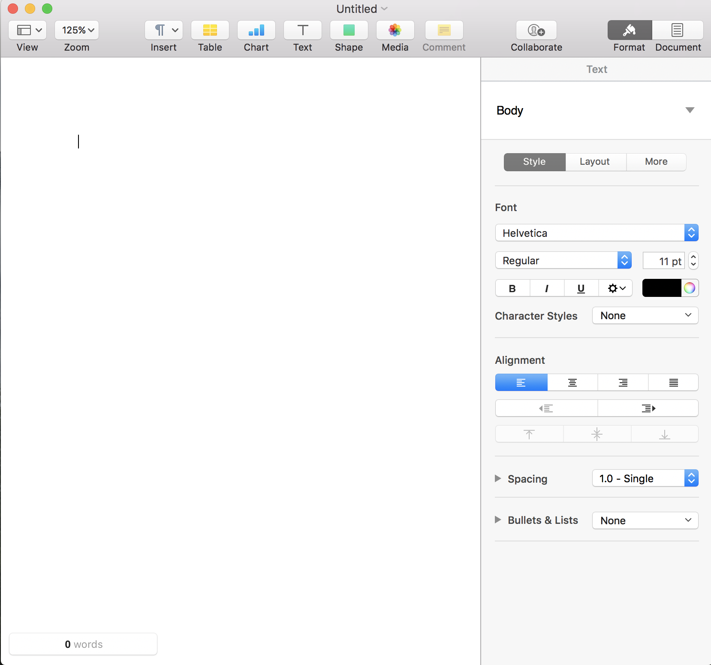
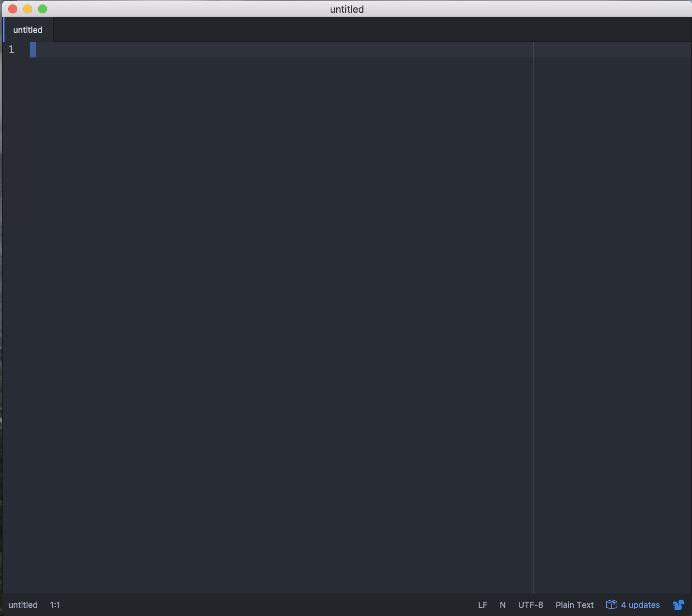

Literary Studies
&
Software Development
Internal Conf
2 March 2017
Outline
- Literary Studies: An Overview
- Literature & Software: A Comparison
- What Can Tech Learn from Literature?
Literary Studies: An Overview
Typical Subdivisions
- British Literature

- U.S. Literature

- World Literature

- Critical Theory


Literary Studies: An Overview
Critical Theory
"Literary theory" is the body of ideas and methods we use in the practical reading of literature. [...] Literary theory is a description of the underlying principles, one might say the tools, by which we attempt to understand literature.-Vince Brewton
(Internet Encyclopedia of Philosophy)

Literary Studies: An Overview
Development as an academic discipline:

"The Rise of English" by Terry Eagleton
Literary Studies: An Overview
But what's it really like?

- more time spent with secondary sources than primary texts
- lack of emphasis on grammar, language, & linguistics
- disciplinary overlap: philosophy, history, economics, gender studies, cultural studies
Literature & Software: A Comparison
Jargon

Jargon & Learning via Context: An Example

Jargon & Learning via Context: An Example
Jargon & Learning via Context: An Example
Literature & Software: A Comparison
Organization & Structure
Literature & Software: A Comparison
Style & (Changing) Conventions
Literature & Software: A Comparison
Creativity & Craft


What Can Tech Learn from Literature?
 Image Credit: Ashley J. Velazquez
Image Credit: Ashley J. Velazquez


intersectionality-focused analysis of human relations
10 Book Recommendations
- One Day of Life , Manlio Argueta
- A Fine Balance , Rohinton Mistry
- On Sal Mal Lane , Ru Freeman
- Waiting for the Barbarians , J. M. Coetzee
- Mrs. Dalloway , Virgina Woolf
- The Conversations of Cow , Suniti Namjoshi
- Masks , Fumiko Enchi
- Incidents in the Life of a Slave Girl , Harriet A. Jacobs
- On Sal Mal Lane , Ru Freeman
- On Sal Mal Lane , Ru Freeman